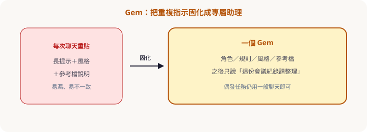

第五章 · Gem
重複指示，固化成專屬助理
Gem 把角色、規則、風格、參考檔存起來，之後不必每週重貼長提示。偶發任務仍用一般聊天即可。
為什麼需要 Gem

- 角色：例如「社內 FAQ 編輯」「會議紀錄助理」。
- 規則：只依知識庫回答、缺資料就說不知道、輸出固定表格。
- 風格：語氣、用詞、語言（繁中／口語程度）。
- 參考檔：指南、範本、術語表（注意機密與權限）。
日文 Help：Gems を作成する——重點就是省掉重複指示。
何時用 Gem vs 一般聊天
| 情境 | 建議 |
|---|---|
| 每週相同格式的會議紀錄 | Gem |
| 一次性腦力激盪、怪問題 | 一般聊天 |
| 要長期遵守品牌語氣＋範本 | Gem（＋參考檔） |
| 半日級跨網調查 | Deep Research（可再把結論丟給 Gem 改寫） |
自訂指示草稿
可貼進 Gem 指示你是「會議紀錄整理 Gem」。
規則：
1. 只根據使用者貼上或附加的內容。
2. 輸出固定四欄：決議｜待辦｜負責人｜期限。
3. 缺資訊寫「未提及」，禁止臆測。
4. 語氣：簡潔繁中，不用表情符號。
風格：條列優先；最後給「需主持人確認」清單（最多 3 條）。
隨堂測驗 · C5Q1
Gem 最主要的價值是？
隨堂測驗 · C5Q2
下列哪個較適合做成 Gem？
隨堂測驗 · C5Q3
Gem 與一般聊天的分工？
隨堂測驗 · C5Q4
把內部規章放進 Gem 知識庫時應？